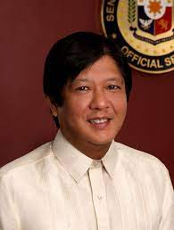

Leody De Guzman
- Occupational Background:
- National chairman, Bukluran ng Manggagawang Pilipino
- Founding member, Nagkaisa Labor Coalition
- Board of Trustee, PhilRights
- Representative, International Center for Labor Solidarity
Political Party:
Partido para sa Demokratikong Reporma (PDR)
Ballot Number: #2
More info here
Facebook Page here


Bongbong Marcos
- Occupational Background:
- Vice-governor of Ilocos Norte from 1980 to 1983
- Governor of Ilocos Norte from 1983 to 1986 and 1998 to 2007
- Congressman, Ilocos Norte from 1992 to 1995 and 2007 to 2010
- Senator from 2010 to 2016
Political Party: Partido Federal ng Pilipinas (PFP)
Ballot Number: #7
More info here
Facebook Page here